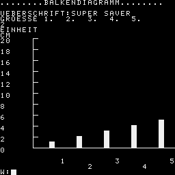

5 REM BALKENDIAGRAMM
10 OUTCH.12
30 P."........BALKENDIAGRAMM........"
35 P.
40 P."UEBERSCHRIFT:",
50 GOSUB 1000
100 P."GROESSE 1. 2. 3. 4. 5."
120 GOSUB 1000
130 P."EINHEIT"
140 GOSUB 1000
150 A=HEX(2B)
160 L=PEEK(A);A=A+1;H=PEEK(A)
200 FOR I=1 TO 5
210 P."WERT VON",I,
220 INPUT" "C
230 @(I)=C
240 NEXT I
250 REM MAXIMUM FINDEN
260 I=1;X=@(I)
270 FOR I=2 TO 5
280 IF X<@(I) GOTO 300
290 NEXT I
295 GOTO 350
300 X=@(I);M=I;GOTO 290
350 V=X/20+1
360 F=V*20
370 POKE A,H;A=A-1;POKE A,L
380 FOR K=1 TO 11
410 P.#1,F
420 F=F-2*V
430 P.
440 NEXT K
450 B=HEX(ECE6)
470 FOR K=1 TO 10
480 POKE B,193
490 B=B+32
500 POKE B,159
510 B=B+32
520 NEXT K
540 B=HEX(EF66)
550 FOR K=1 TO 26
560 POKE B,158
565 B=B+1
570 NEXT K
580 GOSUB 2000
590 K=1
600 P.#12,@(K),
610 FOR K=3 TO 5 STEP 2
620 P.#10,@(K),
630 NEXT K
640 K=2
650 P.#17,@(K),
660 K=4
670 P.#10,@(K)
970 INPUT W
980 IF W=1 GOTO 10
990 STOP
1000 W=INCH.;OUTCH.W
1010 IF W#13 GOTO 1000
1020 RETURN
2000 C=HEX(EF44)
2020 FOR K=1 TO 5
2030 C=C+5
2040 B=C
2200 Q=@(K)/V
2210 IF Q=0 GOTO 2320
2220 FOR J=1 TO Q
2240 POKE B,255
2300 B=B-32
2310 NEXT J
2320 R=@(K)-Q*V
2325 M=R*10/V
2330 IFM<=3POKEB,248;GOTO2400
2335 IFM<=4POKEB,249;GOTO2400
2340 IFM<=5POKEB,250;GOTO2400
2345 IFM<=6POKEB,251;GOTO2400
2350 IFM<=7POKEB,252;GOTO2400
2355 IFM<=8POKEB,253;GOTO2400
2360 IFM<=9POKEB,254;GOTO2400
2400 NEXT K
3000 RETURN